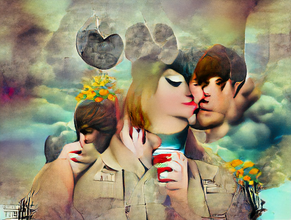
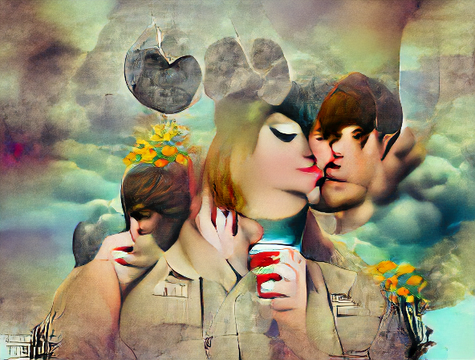

There are so many AI art generators out there to use.
My first AI art generating app (5 free pieces of art per day): https://www.starryai.com/
Images in : img/starryai/


 

Doesn’t require log in (5 free pieces of art per day, however using incognito mode or edge counts as a separate user for 15 pieces of art per day): https://creator.nightcafe.studio/
Images in : img/nightcafe


There are a bunch more I’m looking forward to trying: https://www.unite.ai/10-best-ai-art-generators/#:~:text=Another%20one%20of%20the%20best,trained%20with%20millions%20of%20images
Tips on dealing with displaying images in a rendered document: https://rpubs.com/RatherBit/90926